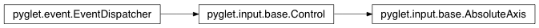

AbsoluteAxis Class¶
-
class
AbsoluteAxis(name, min, max, raw_name=None)¶ An axis whose value represents a physical measurement from the device.
The value is advertised to range over
minandmax.Variables: - min – Minimum advertised value.
- max – Maximum advertised value.
Methods:
Attributes:
HATName of the hat (POV) control, when a single control enumerates all of the hat’s positions. HAT_XName of the hat’s (POV’s) horizontal control, when the hat position is described by two orthogonal controls. HAT_YName of the hat’s (POV’s) vertical control, when the hat position is described by two orthogonal controls. RXName of the rotational-X axis control RYName of the rotational-Y axis control RZName of the rotational-Z axis control XName of the horizontal axis control YName of the vertical axis control ZName of the Z axis control. event_typesvalueCurrent value of the control.
Attributes¶
-
AbsoluteAxis.HAT= ‘hat’¶ Name of the hat (POV) control, when a single control enumerates all of the hat’s positions.
-
AbsoluteAxis.HAT_X= ‘hat_x’¶ Name of the hat’s (POV’s) horizontal control, when the hat position is described by two orthogonal controls.
-
AbsoluteAxis.HAT_Y= ‘hat_y’¶ Name of the hat’s (POV’s) vertical control, when the hat position is described by two orthogonal controls.
-
AbsoluteAxis.RX= ‘rx’¶ Name of the rotational-X axis control
-
AbsoluteAxis.RY= ‘ry’¶ Name of the rotational-Y axis control
-
AbsoluteAxis.RZ= ‘rz’¶ Name of the rotational-Z axis control
-
AbsoluteAxis.X= ‘x’¶ Name of the horizontal axis control
-
AbsoluteAxis.Y= ‘y’¶ Name of the vertical axis control
-
AbsoluteAxis.Z= ‘z’¶ Name of the Z axis control.
Inherited members¶
Methods
AbsoluteAxis.register_event_type(name)Register an event type with the dispatcher.
Registering event types allows the dispatcher to validate event handler names as they are attached, and to search attached objects for suitable handlers.
Parameters: name (str) – Name of the event to register. Attributes
AbsoluteAxis.event_types= [‘on_change’, ‘on_press’, ‘on_release’]
AbsoluteAxis.valueCurrent value of the control.
The range of the value is device-dependent; for absolute controls the range is given by
minandmax(however the value may exceed this range); for relative controls the range is undefined.
Type: float